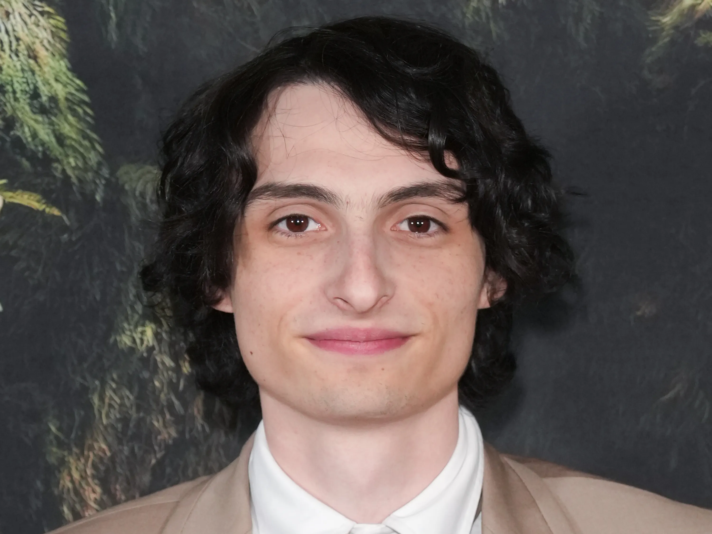
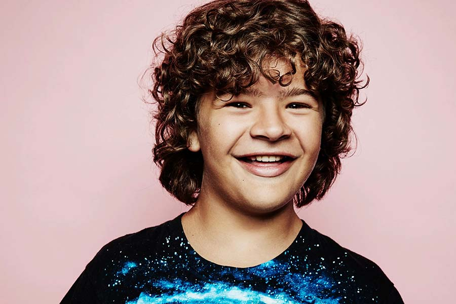
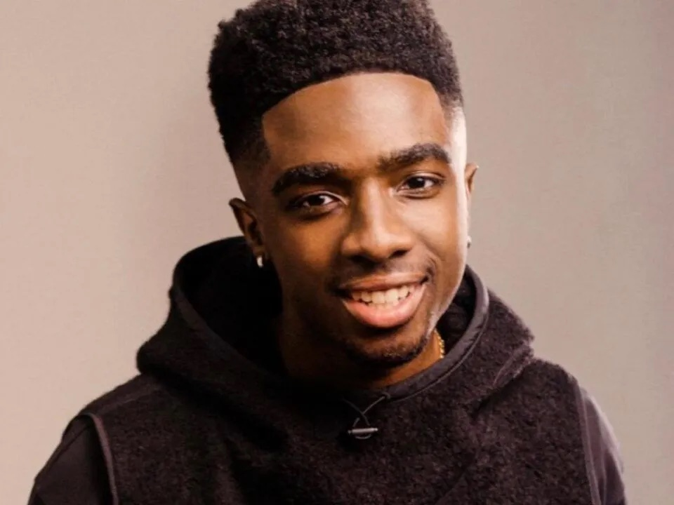
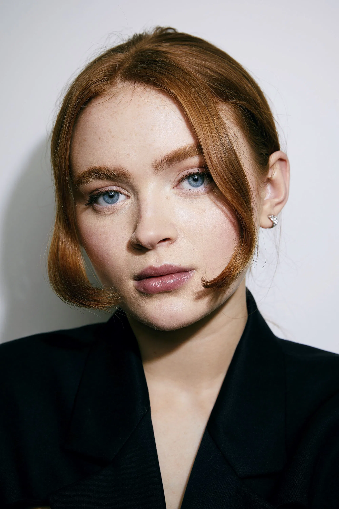
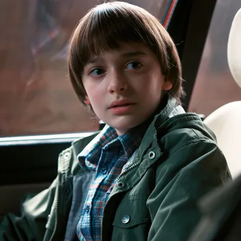
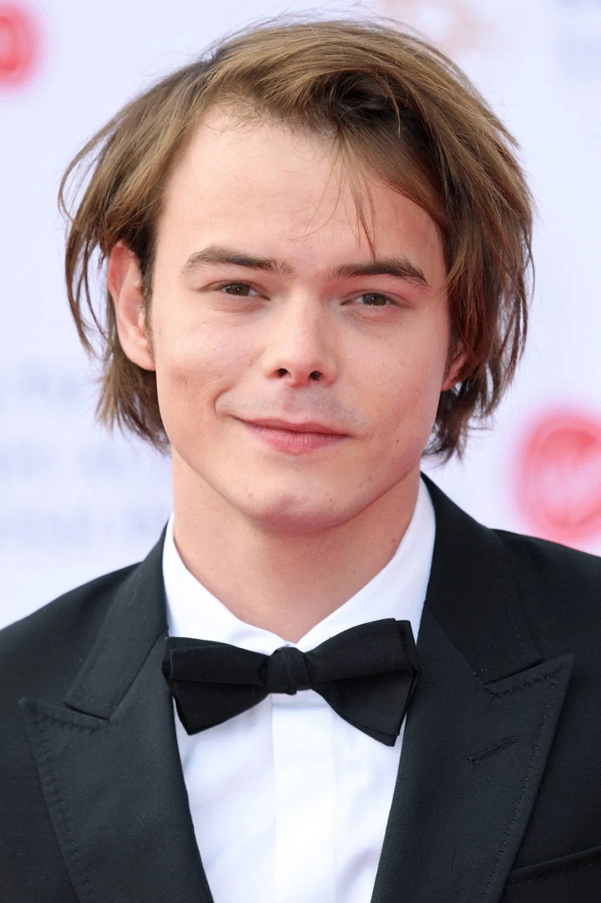
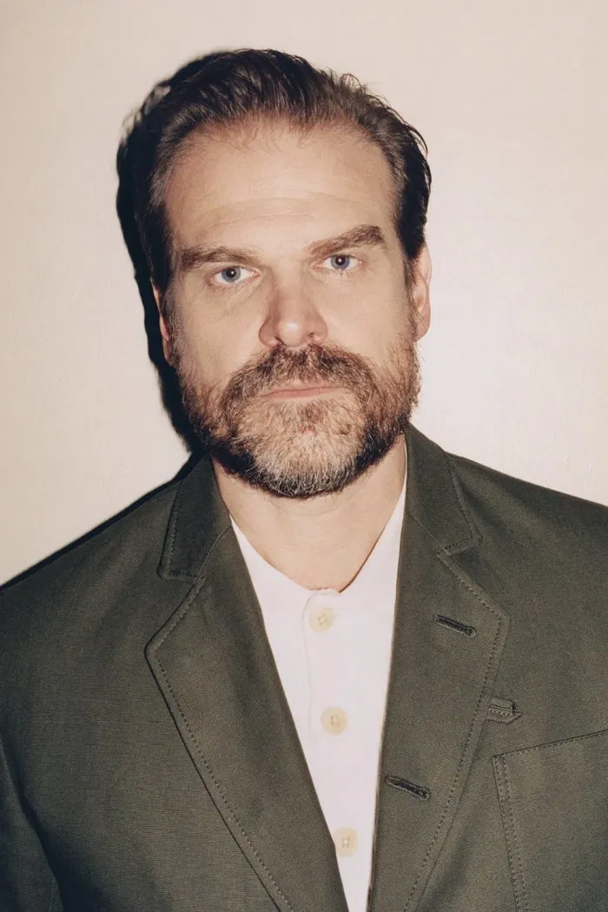
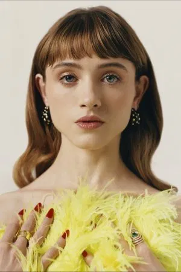
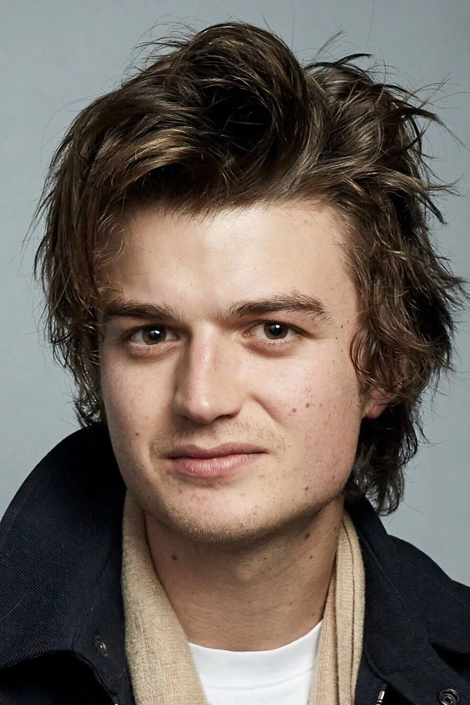

Descrição: Uma garota com poderes psíquicos que escapa de um laboratório secreto. Apesar de falar pouco no início, é corajosa, protetora e tem um forte senso de justiça.

Mike Wheeler (Finn Wolfhard)
Descrição: Um garoto inteligente, leal e determinado. Ele é o primeiro a acolher Eleven e nunca desiste de seus amigos, mostrando um coração gentil e uma mente estratégica.

Dustin Henderson (Gaten Matarazzo)
Descrição: Curioso, engraçado e extremamente inteligente, Dustin é o “cientista” do grupo. Tem um otimismo contagiante e sempre busca soluções criativas para os problemas.

Lucas Sinclair (Caleb McLaughlin)
Descrição: Cético e prático, Lucas é um amigo leal que preza pela segurança do grupo. Apesar de ser mais desconfiado que os outros, demonstra grande coragem e espírito de equipe.

Max Mayfield (Sadie Sink)
Descrição: Garota corajosa e sarcástica, que se destaca pelo skate e atitude rebelde. Apesar da pose durona, tem um lado sensível e forma laços profundos com o grupo.

Will Byers (Noah Schnapp)
Descrição: Um garoto sensível e artístico, que passa por experiências traumáticas no Mundo Invertido. Sua ligação com o sobrenatural o torna uma peça-chave na história.
Joyce Byers (Winona Ryder)
Descrição: Mãe de Will e Jonathan, determinada e emocionalmente intensa. Não mede esforços para proteger seus filhos, mesmo quando isso a faz parecer instável aos olhos dos outros.

Jonathan Byers (Charlie Heaton)
Descrição: Irmão mais velho de Will, reservado e introspectivo, com grande sensibilidade. Gosta de fotografia e demonstra maturidade e lealdade nos momentos difíceis.

Jim Hopper (David Harbour)
Descrição: O chefe de polícia de Hawkins. Começa como um homem solitário e cético, mas revela-se um protetor firme e paternal, especialmente com Eleven, a quem adota como filha.

Nancy Wheeler (Natalia Dyer)
Descrição: Irmã mais velha de Mike, inteligente, determinada e curiosa. Ao longo da série, amadurece e se torna uma investigadora corajosa, enfrentando o sobrenatural de frente.

Steve Harrington (Joe Keery)
Descrição: Começa como o típico garoto popular, mas evolui em alguém responsável e protetor. Sua relação com os mais jovens e seu carisma o transformam em um dos favoritos dos fãs.